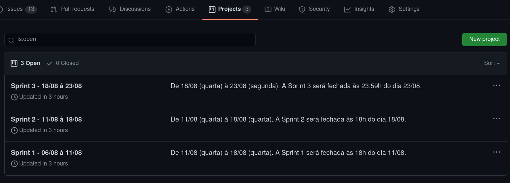
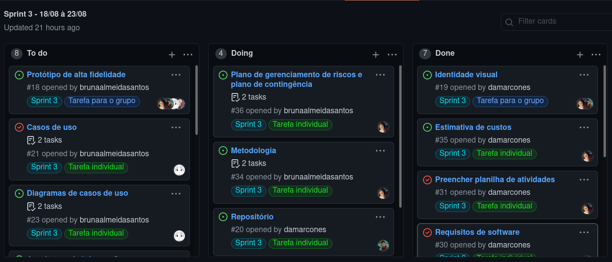
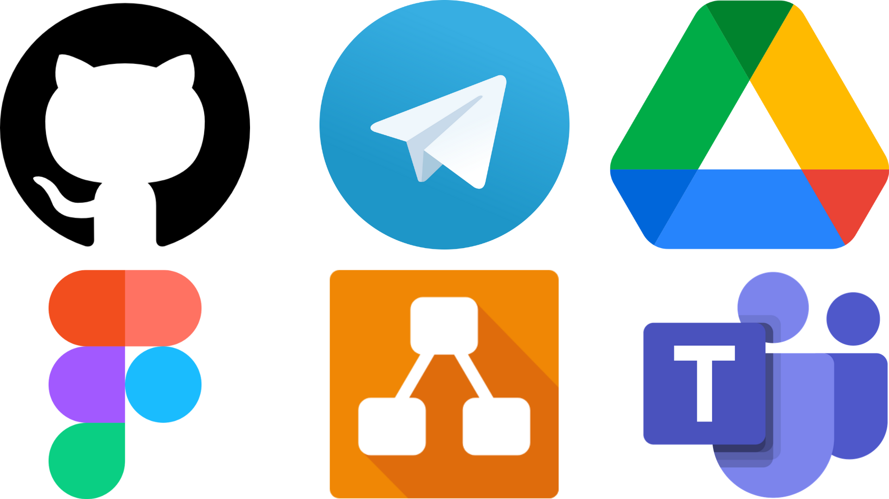

METODOLOGIA
Histórico de versão
| Data | Versão | Descrição | Autor(es) |
|---|---|---|---|
| 20.08.2021 | 0.1 | Criação do documento | Bruna Almeida |
| 21.08.2021 | 0.2 | Adiciona metodologias | Bruna Almeida |
| 21.08.2021 | 0.3 | Adiciona ferramentas | Bruna Almeida |
Introdução
O objetivo deste documento é descrever a metodologia adotada pela equipe de software durante o processo de desenvolvimento do projeto Robô Garçom para a disciplina de Projeto Integrador II, da Universidade de Brasília. A seguir serão descritas as metodologias utilizadas como referência para a condução do projeto, e quais as principais ferramentas que a equipe utiliza para se organizar e se comunicar durante o projeto.
Metodologias ágeis
As metodologias ágeis são abordagens para o desenvolvimento de produtos que estão alinhadas com os valores e princípios descritos no Manifesto Ágil para Desenvolvimento de Software, assinado em 2001 em Utah. As metodologias ágeis em geral defendem o planejamento adaptativo, times auto-organizados e multidisciplinares, melhoria contínua e o desenvolvimento evolucionário.
Para a nossa equipe foram unidos aspectos das metodologias Scrum, KANBAN e smart, com o objetivo de utilizar uma metodologia que melhor se adaptasse ao nosso contexto.
Para a nossa equipe foram unidos aspectos das metodologias Scrum, KANBAN e smart, com o objetivo de utilizar uma metodologia que melhor se adaptasse ao nosso contexto.
1. Scrum
Scrum é um método de trabalho realizado a partir de pequenos ciclos de atividades dentro de um projeto. Cada ciclo de atividade é planejado previamente e se chama Sprint, composto por um período de tempo predefinido em que as tarefas devem ser realizadas pela equipe. A metodologia Scrum permite potencializar o trabalho em equipe, acompanhar a evolução do produto, sempre com foco na qualidade da produção e nos prazos estipulados.
1.1. Product Backlog
Primeiramente, foi definido pela equipe o Product Backlog, onde foram categorizados e priorizados os requisitos do sistema, e consequentemente as funcionalidades do software. É importante frisar que o Product Backlog pode ser alterado durante o processo de desenvolvimento, à medida que novas necessidades surgem.
1.1. Sprints
Com o Product Backlog já definido, podemos definir as Sprints de trabalho.
As Sprints são planejadas pela gerente do núcleo de software, e transcritas no repositório da equipe no GitHub, em forma de projetos.

A gerente da equipe planeja as tarefas para a Sprint, que são disponibilizadas em forma de Issues, define o responsável pela atividade, o prazo de abertura e fim da Sprint e o padrão que cada tarefa deve seguir. Depois, todas essas informações são passadas à equipe durante a Sprint Planning.
1.1. Sprint planning
Antes de iniciar uma nova Sprint, a equipe se reúne para discutir sobre as atividades da última Sprint, facilidades e dificuldades durante o ciclo e posteriormente são distribuídas e explicadas as atividades do novo ciclo, bem como prazo de entrega e o que é esperado de cada atividade.
2. KANBAN
A metodologia KANBAN está sendo utilizada para organizar as tarefas do núcleo, deixando visível a todos da equipe cada etapa das atividades. O KANBAN está sendo utilizado na plataforma GitHub e é dividido em em três colunas, desta forma:
- To do/para fazer: atividades que precisam ser feitas;
- Doing/em execução: atividades que estão em andamento;
- Done/concluídas: atividades que foram finalizadas pela equipe.
Cada atividade é atribuída a um ou mais responsáveis e todas iniciam na coluna “To do”, e quando a atividade é iniciada é preciso movê-la para a coluna “Doing”, e ao finalizá-la, o responsável deve movê-la para a coluna “done”.

Acompanhar a lista de atividades é vital para o bom funcionamento do método, de forma que todos os integrantes da equipe atualizem os dados inseridos constantemente.
3. SMART
A metodologia SMART é um modo de estruturar a criação de quaisquer metas, de modo a garantir que elas sejam realistas e alcançáveis. A sigla em inglês SMART, cuja tradução é “esperta”, engloba cinco características indispensáveis em uma meta:
- S - specific, isto é, uma meta precisa ser específica, assertiva, direta. Focar em um único aspecto.
- M - measurable, o quanto uma meta precisa ser mensurável para avaliação eficaz do processo.
- A - attainable, isto é, uma meta deve ser desafiadora e viável ao mesmo tempo.
- R - relevant, é quanto uma meta deve ser importante para o processo.
- T - time-related, uma meta deve ter prazo para conclusão.
A metodologia SMART é empregada na elaboração das tarefas de cada Sprint, que são criadas em formato de issues no nosso repositório do GitHub.
Ferramentas
As principais ferramentas utilizadas pela equipe são:

- GitHub: Utilizado para fazer o versionamento do projeto, o armazenamento dos documentos criados pela equipe e hospedagem da WIKI do projeto.
- Telegram: Utilizado para a comunicação entre a equipe de forma rápida.
- Google Drive: Utilizado para armazenar documentos criados pelo time.
- Figma: Utilizado para a criação do protótipo de alta fidelidade.
- Draw.io: Utilizado para a criação do protótipo de baixa fidelidade e diagramas.
- Microsoft Teams: Utilizado para fazer reuniões de forma remota com os integrantes da equipe.
Referências
-
TARGET TEAL, O que são metodologias ágeis?, dispnível em: targetteal.com/pt/blog/o-que-sao-metodologias-ageis/. Acesso em 20 de agosto de 2021.
-
INOVAÇÃO, SMART: crie metas com base na Metodologia Ágil, dispnível em: inovacaosebraeminas.com.br/smart-crie-metas-com-base-na-metodologia-agil. Acesso em 20 de agosto de 2021./
-
DIGITAL HOUSE, Kanban: a metodologia ágil mais simples para implementar no dia a dia, dispnível em: digitalhouse.com/br/blog/como-usar-metodologia-kanban. Acesso em 20 de agosto de 2021.
-
CONTA AZUL, Metodologia Scrum: o que é, métodos ágeis e guia prático, dispnível em: contaazul.com/metodologia-scrum. Acesso em 20 de agosto de 2021.